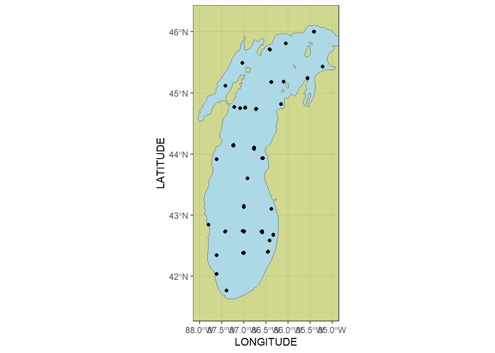
Exploring Full WQD
I split the NA types into three categories (for sure NA’s, Unsure NA or not, Definitely not NA’s but I’ll address later). You can see with the line break in na argument. I determined missing values in each “VALUE” column with the commented out code below Dropped ANAL_CODE_ columns because they are redundant with the “Analyte” columns
Spatial summary
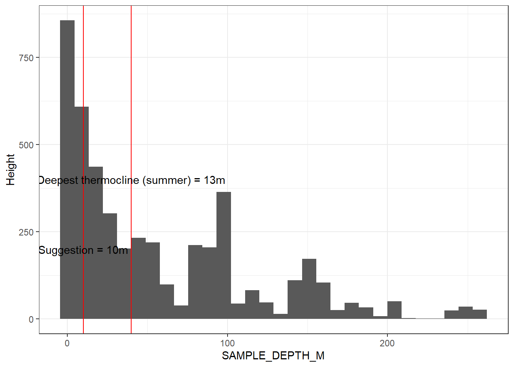
Time summary
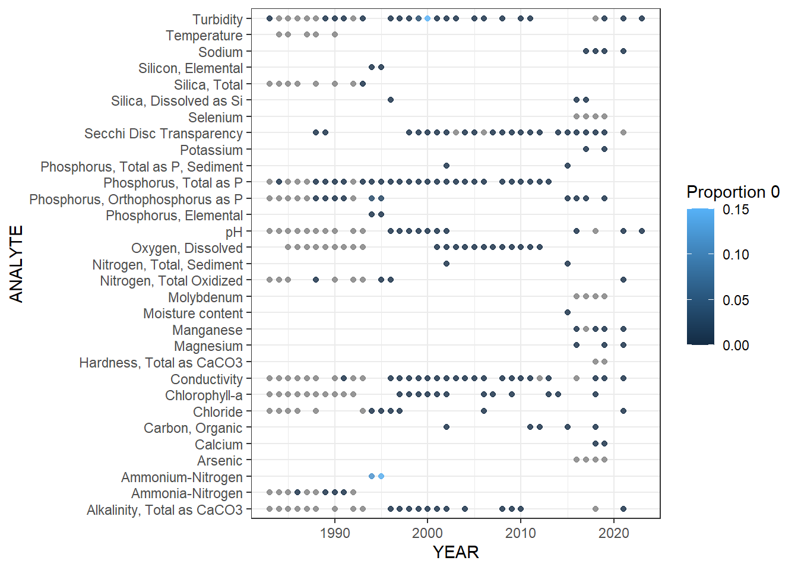
Season summary
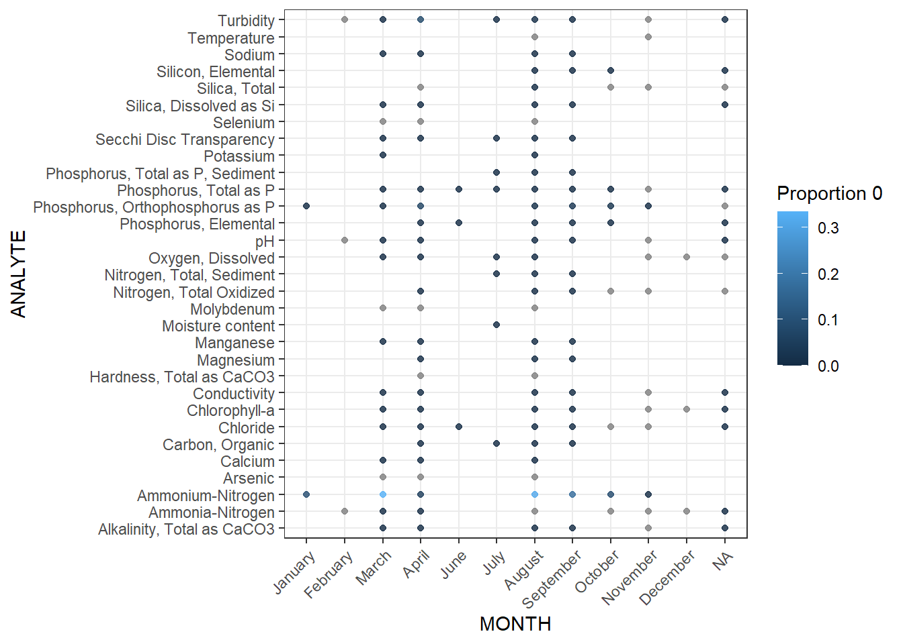
Time of Day
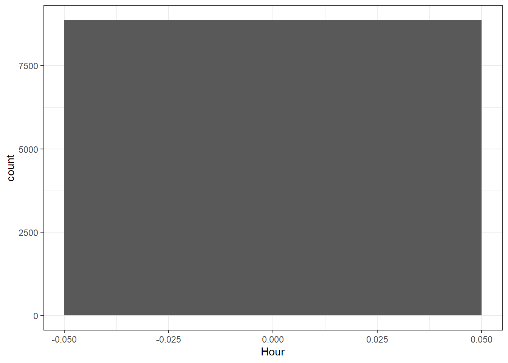
Sampling Fraction
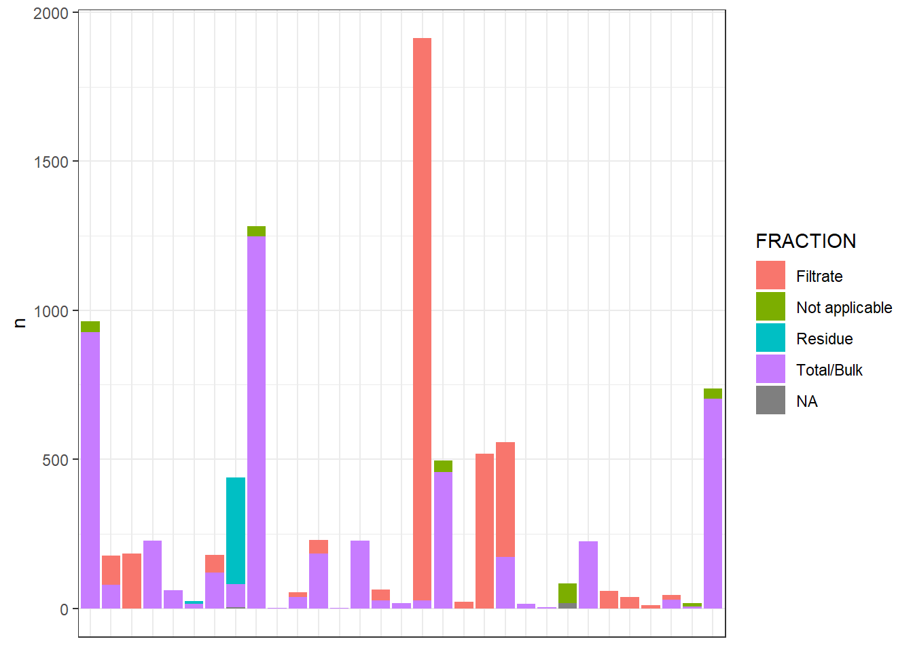
Depth Codes
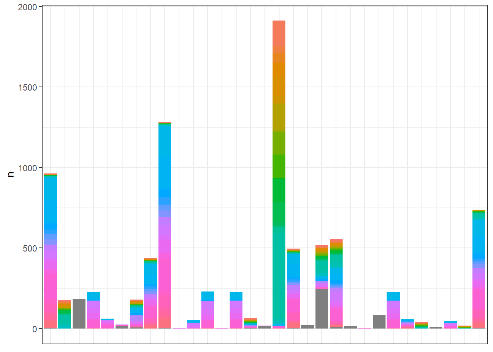
Units
Only measure with multiple units is Turbidty (FTU/NTU), they seem to follow same distribution
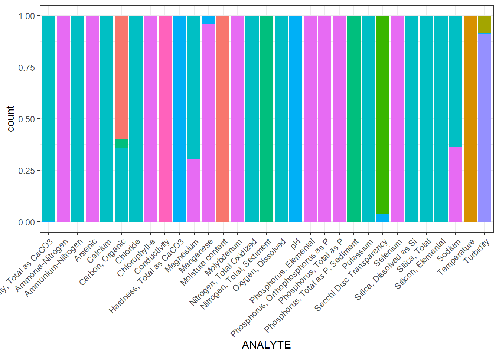
| ANALYTE | UNITS |
|---|---|
| Alkalinity, Total as CaCO3 | mg/l |
| Alkalinity, Total as CaCO3 | none |
| Carbon, Organic | % |
| Carbon, Organic | mg/l |
| Carbon, Organic | mg/g |
| Conductivity | umho/cm |
| Conductivity | none |
| Magnesium | mg/l |
| Magnesium | ug/l |
| Manganese | ug/l |
| Manganese | none |
| Phosphorus, Orthophosphorus as P | ug/l |
| Phosphorus, Orthophosphorus as P | mg/l |
| Secchi Disc Transparency | m |
| Secchi Disc Transparency | none |
| Sodium | mg/l |
| Sodium | ug/l |
| Turbidity | NTU |
| Turbidity | none |
| Turbidity | FTU |
Remarks
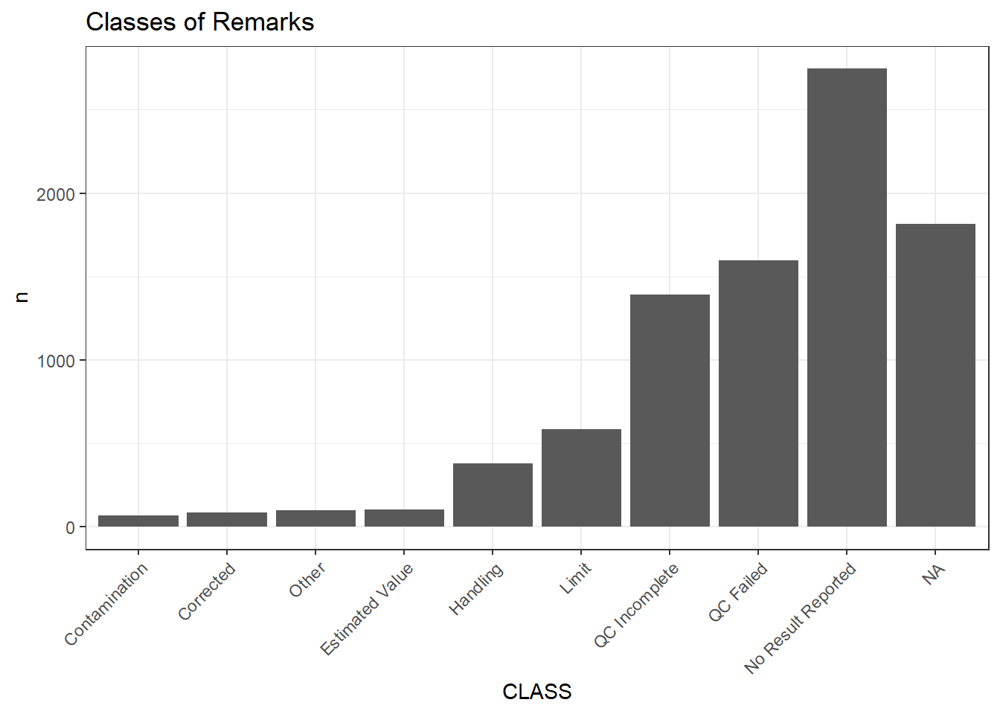
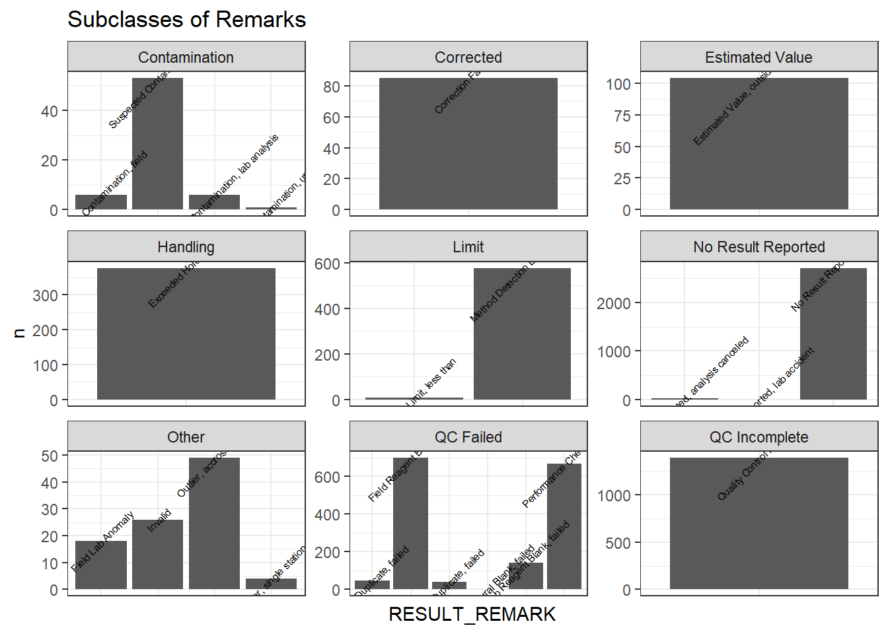
# A tibble: 0 × 25
# ℹ 25 variables: YEAR <int>, MONTH <chr>, SEASON <chr>, LAKE <chr>,
# CRUISE_ID <chr>, VISIT_ID <chr>, STATION_ID <chr>, STN_DEPTH_M <dbl>,
# LATITUDE <dbl>, LONGITUDE <dbl>, SAMPLING_DATE <date>, TIME_ZONE <chr>,
# SAMPLE_DEPTH_M <dbl>, DEPTH_CODE <chr>, MEDIUM <chr>, SAMPLE_TYPE <chr>,
# QC_TYPE <chr>, SAMPLE_ID <chr>, ANALYTE <chr>, VALUE <dbl>, UNITS <chr>,
# FRACTION <chr>, METHOD <chr>, RESULT_REMARK <chr>, REMARK_RISK <chr>Flag risks
| REMARK_RISK | CLASS | RESULT_REMARK | DESCRIPTION |
|---|---|---|---|
| HIGH | QC Failed | Field Duplicate, failed | A field duplicate associated with this analysis failed the acceptance criteria. Validity of reported value may be compromised |
| HIGH | Other | Field Lab Anomaly | Reported value for lab measurement was inconsistent with reported value for corresponding field measurement. Validity of reported value may be compromised |
| HIGH | No Result Reported | No Result Reported, analysis canceled | Analysis was canceled and not performed. No result value was reported |
| HIGH | Contamination | Suspected Contamination, field | Contamination is suspected to have occurred during the field collection process. Validity of reported value may be compromised |
| HIGH | NA | Lab Duplicate, failed;Invalid | NA |
| MEDIUM | QC Incomplete | Quality Control incomplete | Some quality control samples (such as duplicates or standard checks) related to the analysis were not prepared, analyzed, or reported. |
| MEDIUM | Other | Outlier, accross stations | Reported value was determined to be an outlier (> 3 std. devs) when compared to other data values from the same project accross all station at which field samples were collected. |
| MEDIUM | Handling | Exceeded Holding Time | Sample or extract was held longer than the approved amount of time before analysis. Validity of reported value may be compromised |
| MEDIUM | NA | Quality Control incomplete;Suspected Contamination, field | NA |
| LOW | Limit | Method Detection Limit, less than | Analyte produced an instrument response but reported value is below the calculated method detection limit. Validity of reported value may be compromised |
| LOW | Estimated Value | Estimated Value, outside limit of precision | Reported value was not within expected limits of precision and is therefore considered an estimate |
| LOW | Corrected | Correction Factor, lab | Reported value was corrected by a lab performance check factor |
| LOW | NA | Method Detection Limit, less than;Exceeded Holding Time | NA |
Missingness
Analytes

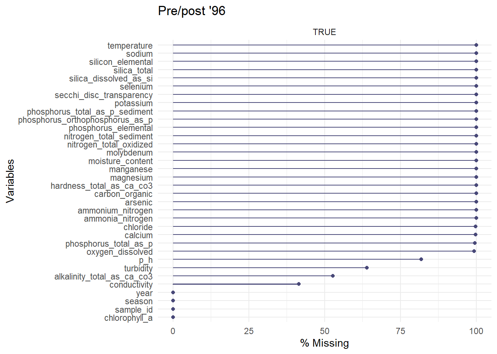
Spatial information
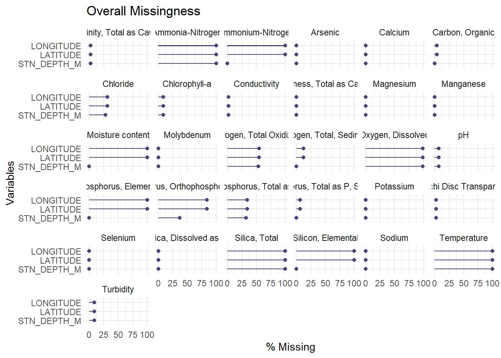
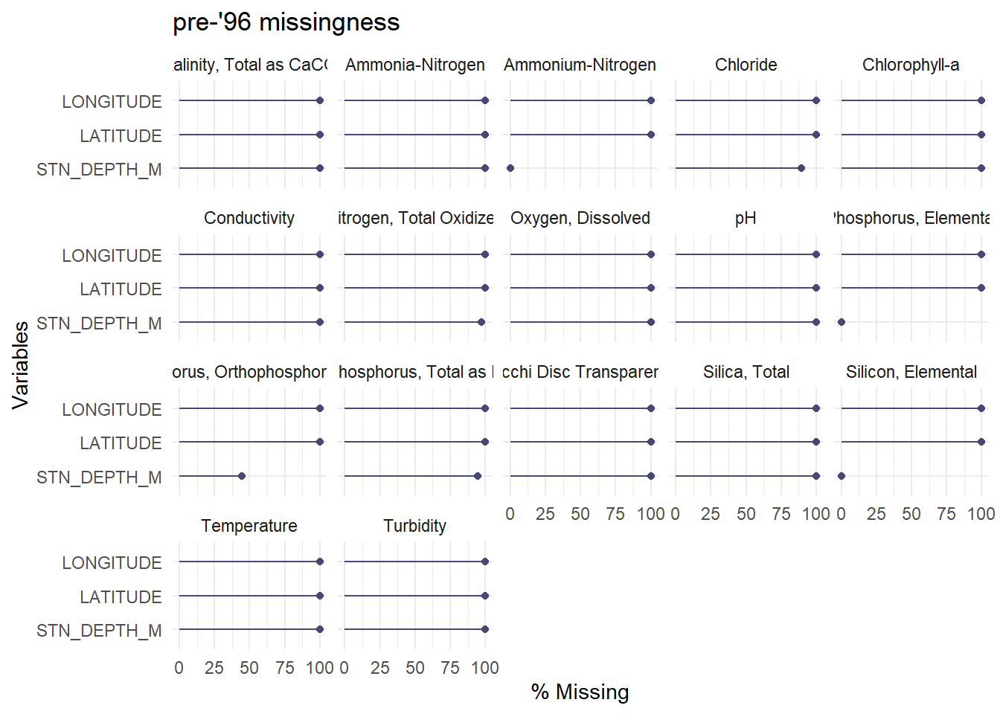
–> –> –> –>
–> –> –>
–>
–>
–> –> –> –> –> –> –> –>
–>
–> –> –> –> –> –> –> –>